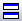

FAQ-1176 エクスポートした画像がOriginのグラフウィンドウと異なるのはなぜでしょうか？
Export-Graph-Different-From-Inside-Origin
最終更新日：2023/6/1
不要な線やオブジェクトが表示されるなど、エクスポートした画像がOriginのグラフウィンドウでの表示と異なる場合、プロジェクトファイル内に同じショートネームの他のウィンドウがあることが原因である可能性があります。
- 標準ツールバーのボタンをクリックしてグラフを複製するか、グラフウィンドウタイトルバー上で右クリックしてウィンドウの複製作成を選択します。そして複製したグラフを再度エクスポートします。
 | - エクスポートした画像でフォントサイズが異なる場合には、このFAQを参照してください。
- コピーした画像に余分はスペースがある場合は、このFAQを参照してください。
|
キーワード:エクスポート, グラフ, 画像, エラーバー, 枠, 四角形